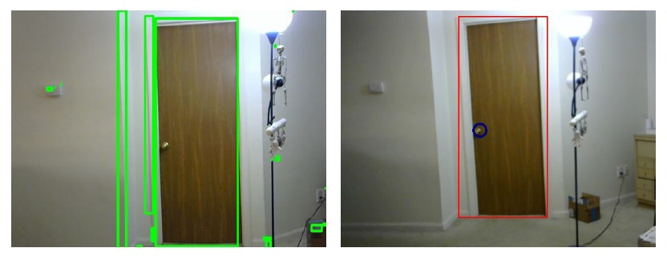

Our project was to design a navigation system for the visually impaired. Since this has been a problem that has gone through research over the years we had to learn and apply some of the previous works done by researchers to solve this problem
View Project ProposalDoor Detection method
Obstacle Detection method
Canny edge detection and Harris corner detection
Contour detection and rectangle overlay using heuristics
Door Close and Open status
K means segmentation and Sift Detection
Contour detection ,Sift localization and contour grouping
Other objects and limitations
We used a 3 D camera so that we could accurately capture the depth and distance information. A detailed analysis on the steps followed to calibrate this camera and also an entire analysis on the methodology and future works are available in the report attached below
View final reportSymposium
The below was the poster that was presented at the Computer Vision symposium held at the IU School of informatics
Real Time Door and Obstacle detection
Below is the video taken from our camera when we implemented out Door and Obstacle detection algorithms using OpenCV
Click on the below link to navigate to my GITHUB link
View GITHUB code